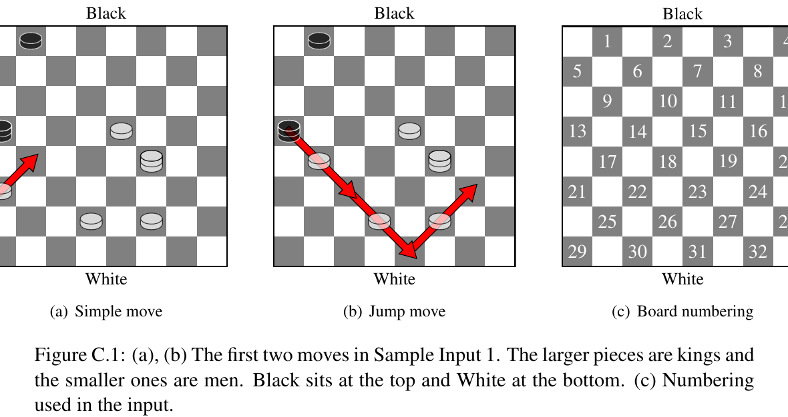

ICPC World Finals 2019 · Problem C
Your university’s board game club just hosted a Checkers tournament, and you were assigned to take notes on the games. Unfortunately, while walking home, you dropped all of your papers into a puddle! Disaster! Much of what you wrote is now unreadable; all you have left are some lists of moves played in the middle of various games. Is there some way you can reconstruct what happened in those games? You had better fix things fast, or they will demote you to Tic-Tac-Toe recordkeeper!
Checkers (or English Draughts) is a well-known board game with simple rules. It is played on the dark squares of an 8 × 8 checkerboard. There are two players, Black and White, who alternate turns moving their pieces (all of Black’s pieces are black and all of White’s pieces are white). Each piece occupies a single dark square, and can be either a normal man or a promoted king. A turn consists of choosing one piece and moving it in one of two ways:

In Checkers, captures are forced moves. If a jump move is available at the start of a player’s turn, they must jump, and cannot stop jumping with that piece until it has no more possible jumps. They are free to choose which piece to jump with, and where, if there are multiple possibilities. In Figure C.1(b), Black could not have made any other move.
If a man reaches the farthest row from its player (that is, a black man reaches the bottom row or a white man reaches the top row), it is removed from the board and replaced by a king of the same color (it is said to be promoted), and the turn ends. A piece cannot be promoted and then jump backwards as a new king in the same turn.
Given a list of moves, find a setup of pieces such that the moves can be legally played in sequence starting from that setup. This setup may not have black men on the bottom row or white men on the top row, since they would have been promoted to kings already. You need only ensure that the rules above are obeyed; you do not need to ensure that this setup is reachable in a real game of Checkers.
The first line of input contains a character c and an integer n, where c ∈ {B, W} indicates which player makes the first move (Black or White respectively) and n (1 ≤ n ≤ 100) is the number of moves in the list. Then follow n lines, each of which describes a move in the standard Checkers notation defined below.
The dark squares are identified by numbers 1–32, as shown in Figure C.1(c). A simple move from square a to square b is written as a-b. A jump move starting at a and jumping to b1, b2, …, bk is written as axb1xb2x· · ·xbk.
There is always a valid solution for the given set of moves.
Output two boards side-by-side (separated by a space), giving the positions of all pieces on the board before (on the left) and after (on the right) the given moves. Use ‘-’ for light squares, ‘.’ for empty dark squares, lowercase ‘b’ and ‘w’ for black and white men, and uppercase ‘B’ and ‘W’ for black and white kings. If there is more than one valid solution, any one is acceptable.
W 3 21-17 13x22x31x24 19x28
-b-.-.-. -b-.-.-. .-.-.-.- .-.-.-.- -.-.-.-. -.-.-.-. B-.-w-.- .-.-w-.- -.-.-W-. -.-.-.-. w-.-.-.- .-.-.-.- -.-w-w-. -.-.-.-W .-.-.-.- .-.-.-.-
B 5 2-7 9x2 32-27 2x11x18 5-9
-.-b-.-W -.-.-.-W b-b-.-.- .-.-.-.- -w-.-.-. -b-.-.-. B-w-b-.- B-w-.-.- -.-.-.-. -.-W-.-. .-.-.-.- .-.-.-.- -.-.-.-. -.-.-B-. .-.-.-B- .-.-.-.-